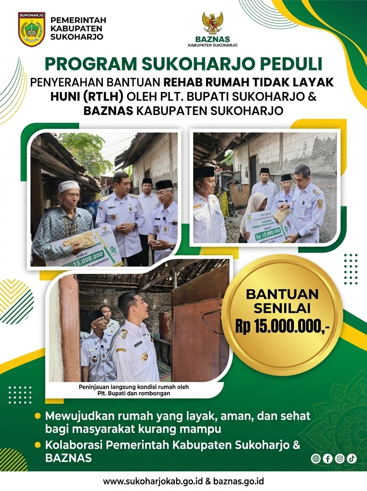
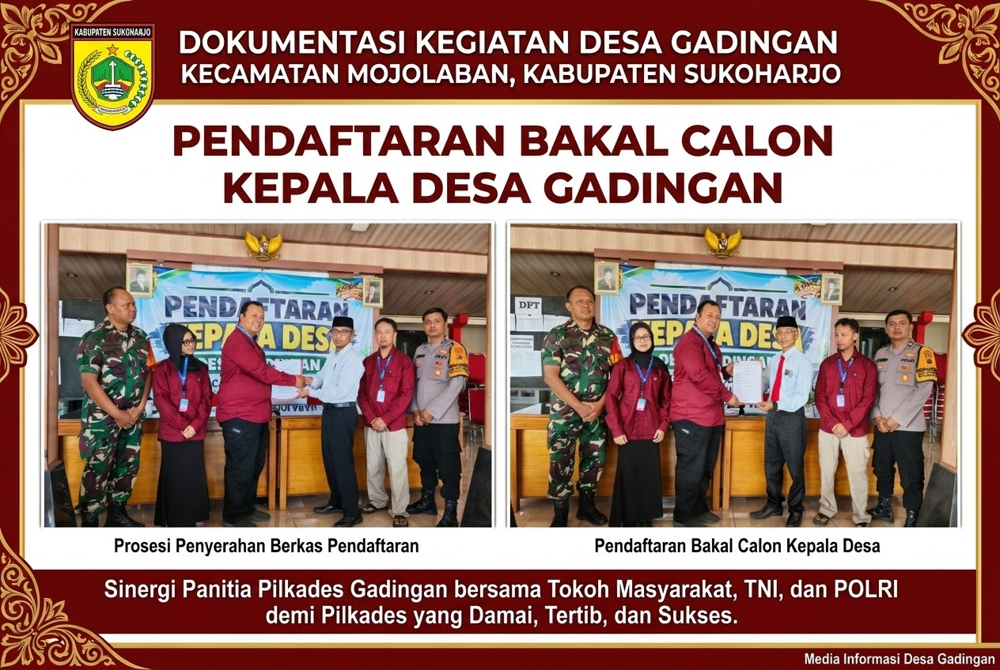
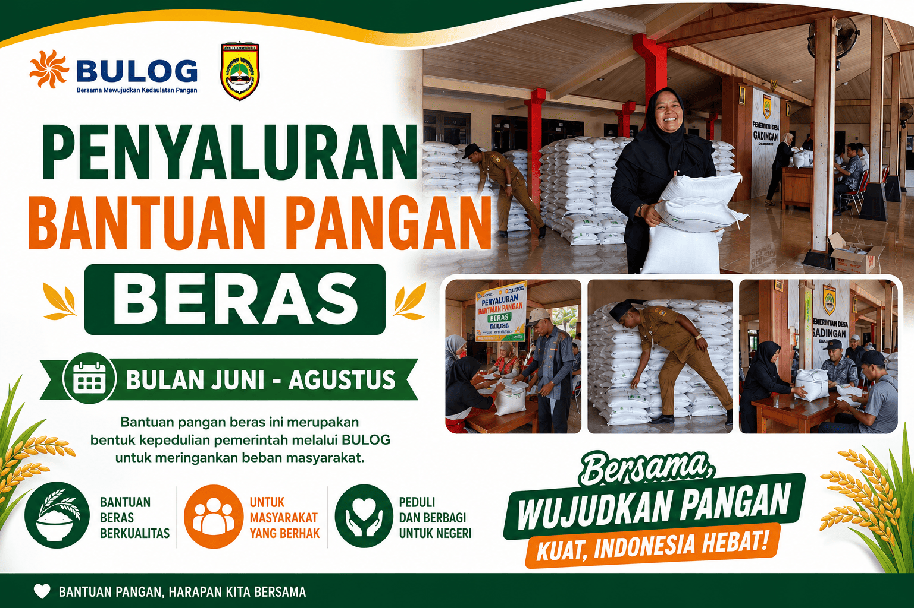
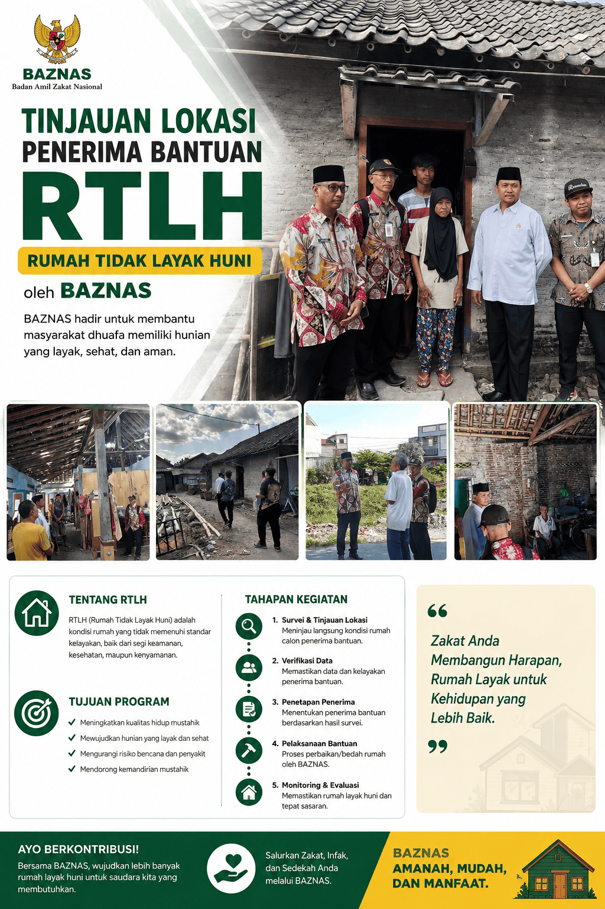

Galeri Foto Dokumentasi Desa Gadingan
Dokumentasi Otentik Kegiatan Pemerintahan, Bantuan Sosial, dan Fasilitas Publik Desa Gadingan
- Semua Koleksi (8)
- Pemerintahan & Pilkades (3)
- Bantuan Sosial & RTLH (3)
- Balai Desa & Layanan (2)

Pendaftaran Calon Kepala Desa
Pelaksanaan tahapan pendaftaran Bakal Calon Kepala Desa Gadingan secara tertib dan kondusif.

Penyerahan Bantuan RTLH BAZNAS
Plt. Bupati Sukoharjo bersama BAZNAS menyerahkan bantuan rehab RTLH Rp 15 juta kepada warga Gadingan.

Penyaluran Bantuan Beras BULOG
Distribusi bantuan pangan beras pemerintah kepada KPM di Pendopo Balai Desa Gadingan.


Penetapan DPS Pilkades
Rapat koordinasi dan penetapan Daftar Pemilih Sementara (DPS) Pemilihan Kepala Desa Gadingan.


Survei Lapangan Program RTLH
Peninjauan kondisi hunian warga penerima bantuan rehabilitasi rumah bersama BAZNAS Sukoharjo.


Musyawarah & Koordinasi Desa
Sinergi aparatur Pemerintah Desa Gadingan bersama lembaga kemasyarakatan desa.

Kantor & Pendopo Balai Desa
Pusat penyelenggaraan pemerintahan dan pelayanan publik masyarakat Desa Gadingan.


Standar Layanan Adminduk
Publikasi persyaratan pengurusan dokumen kependudukan bagi warga Desa Gadingan.